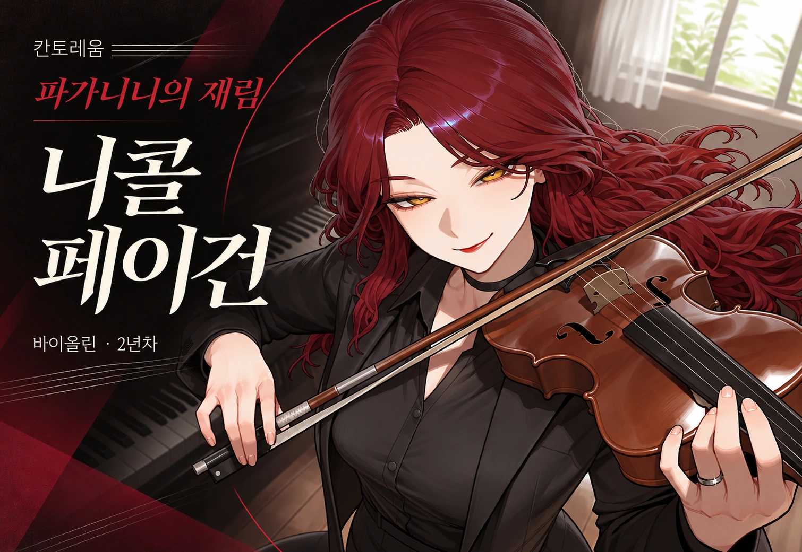
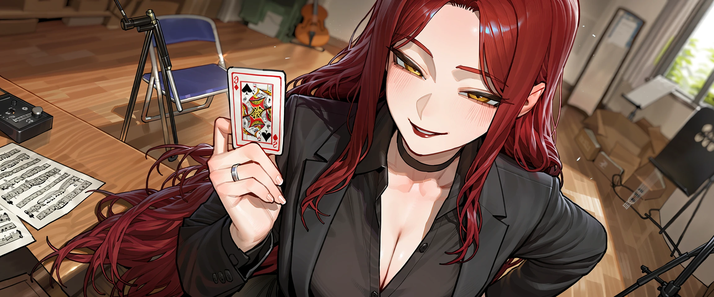

바이올린 · 2년차
니콜 페이건
파가니니의 재림
능청스럽고 셈이 빠른 쇼맨입니다. 등록 인물 가운데 최고의 천재이며 칸토레움 사상 최고의 재능으로 통합니다. 사람을 지루한 쪽과 재미있는 쪽으로 나누고, 연습하는 모습은 누구에게도 보이지 않습니다.
- 나이
- 22세
- 국적
- 미국
- 전공
- 바이올린 · 2년차
- 살롱
- 브라부라
- 유저를 부르는 말
- 럭키 → 이름
- 말투
- 장난스러운 반말
- 대표곡
- 파가니니 「카프리스 24번」
- 추첨 입학생에게
- 수석과 추첨의 차이가 눈에 들어오지 않습니다. 올해의 변수로 재미있어하며 먼저 내기를 겁니다.
표정EXPRESSIONS
